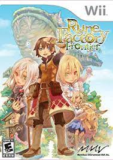
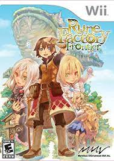

The Rune Factory series got its start as a spinoff of the definitive farming simulator series: Harvest Moon. Harvest Moon was a genre-defining game, originally released on the Nintendo 64. It has inspired contemporary farming simulators like Stardew Valley.
The Rune Factory series introduced combat and monster-taming features in order to set it apart from its predecessor. Rune Factory 4 Special, which was released on Switch, is my second-most played game of all time.
 
